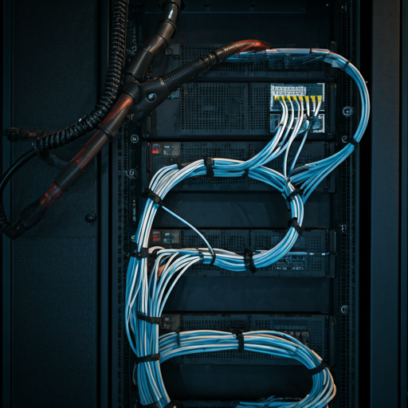

Autonomous Drone Nav
REF: DR-NAV-01

CAM_FEED_01
videocam
COMPONENTS:
OpenCV, C++, ROS2, SLAM
STATUS:
Deployment Successful
>TARGET: ML / CV / EMBEDDED
>INITIALIZING KERNEL...
>MOUNTING CV_MODULE...
>LOADING ASSETS [||||||||||||] 100%
>WELCOME USER_
REF: DR-NAV-01
REF: EDGE-AI-X9

TRANSMISSION CHANNEL OPEN
AWAITING SIGNAL INPUT...